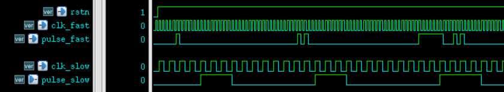

When signals are transmitted from a fast clock domain to a slow clock domain, synchronization processing needs to be performed according to the characteristics of the signal. For single-bit signals, they can generally be distinguished as level signals and pulse signals.
Level Signal Synchronization
In synchronous logic design, a level signal refers to a signal that remains unchanged for a long time. The time it remains unchanged is defined relative to the slow clock. As long as the fast clock signal stays high or low long enough to be captured by the slow clock while meeting timing constraints, the signal can be considered a level signal.
Since level signals can be captured safely, level signals from the fast clock domain to the slow clock domain are also synchronized using the method of delay and register-staging.
Pulse Signal Synchronization
In synchronous logic design, a pulse signal refers to a signal whose valid width output from the fast clock domain is smaller than the slow clock period. If the slow clock domain directly captures such a narrow pulse signal, it may be missed.
If the pulse widths of such pulse signals are all consistent, and the frequency ratio of the two clocks is known, the method of "pulse width expansion in the fast clock domain + delay and register-staging in the slow clock domain" can be used for synchronization.
If narrow pulse signals sometimes also exhibit the characteristics of level signals, that is, sometimes the valid width of the signal is greater than the slow clock period and can be captured by the slow clock, then performing pulse expansion on such signals is obviously uneconomical. In this case, synchronization can be performed through the "handshake transfer" method.
Assuming the high-level period of the pulse signal is the valid signal period, the basic principle is as follows.
- (1) The fast clock domain detects the pulse signal, and outputs a high-level signal pulse_fast_r when a high level is detected. Alternatively, when the fast clock domain outputs a high-level signal, do not rush to pull the signal low; first keep the output signal in a high-level state.
- (2) The slow clock domain performs delay and register-staging sampling on the signal pulse_fast_r from the fast clock domain. Because the pulse signal is held high by the fast clock domain at this time, the delay and register-staging will definitely capture the signal.
- (3) After the slow clock domain confirms that it has sampled the high-level signal pulse_fast2s_r, it feeds it back to the fast clock domain.
- (4) The fast clock domain performs delay and register-staging sampling on the feedback signal pulse_fast2s_r. If the feedback signal is detected as high level, it proves that the slow clock domain has received a valid high-level signal. If the fast clock domain's own logic no longer requires the pulse signal to be high level at this time, simply pull the pulse signal in the fast clock domain low.
The essence of this method is to extend the pulse width of narrow pulse signals through mutual handshaking.
The Verilog model for synchronization processing using handshake signals is described as follows.
Example
//Asynchronous data comes from a module with a working clock of 100MHz
module pulse_syn_fast2s
#( parameter PULSE_INIT = 1'b0
)
(
input rstn,
input clk_fast,
input pulse_fast,
input clk_slow,
output pulse_slow);
wire clear_n ;
reg pulse_fast_r ;
/**************** fast clk ***************/
//(1) When the fast clock domain detects a pulse signal, it does not rush to pull the pulse signal low
always@(posedge clk_fast or negedge rstn) begin
if (!rstn)
pulse_fast_r <= PULSE_INIT ;
else if (!clear_n)
pulse_fast_r <= 1'b0 ;
else if (pulse_fast)
pulse_fast_r <= 1'b1 ;
end
reg [1:0] pulse_fast2s_r ;
/************ slow clk *************/
//(2) The slow clock domain performs delay and register-staging sampling on the signal
always@(posedge clk_slow or negedge rstn) begin
if (!rstn)
pulse_fast2s_r <= 3'b0 ;
else
pulse_fast2s_r <= {pulse_fast2s_r[0], pulse_fast_r} ;
end
assign pulse_slow = pulse_fast2s_r[1] ;
reg [1:0] pulse_slow2f_r ;
/********* feedback for slow clk to fast clk *******/
//(3) Perform delay and register-staging sampling on the feedback signal
always@(posedge clk_fast or negedge rstn) begin
if (!rstn)
pulse_slow2f_r <= 1'b0 ;
else
pulse_slow2f_r <= {pulse_slow2f_r[0], pulse_slow} ;
end
//Control the fast clock domain pulse signal to be pulled low
assign clear_n = ~(!pulse_fast && pulse_slow2f_r[1]) ;
endmodule
The testbench is described as follows.
Example
module test ;
reg clk_100mhz, clk_25mhz ;
reg rstn ;
initial begin
clk_100mhz = 0 ;
clk_25mhz = 0 ;
rstn = 0 ;
#11 rstn = 1 ;
end
always #(10/2) clk_100mhz = ~clk_100mhz ;
always #(45/2) clk_25mhz = ~clk_25mhz ;
reg [7:0] cnt ;
reg pulse_sig ;
always @(posedge clk_100mhz or negedge rstn) begin
if (!rstn) begin
cnt <= 'b0 ;
end
else begin
cnt <= cnt + 1'b1 ;
end
end
//Narrow pulse generation section
always @(posedge clk_100mhz or negedge rstn) begin
if (!rstn) begin
pulse_sig <= 1'b0 ;
end
else if (cnt == 5 ||
cnt == 40 || cnt == 42 ||
cnt >= 75 && cnt <= 81 || cnt == 85 || cnt == 87 )
begin
pulse_sig <= 1'b1 ;
end
else begin
pulse_sig <= 1'b0 ;
end
end
pulse_syn_fast2s u_fast2s_pulse(
.rstn (rstn),
.clk_fast (clk_100mhz),
.pulse_fast (pulse_sig),
.clk_slow (clk_25mhz),
.pulse_slow ());
initial begin
forever begin
#100;
if ($time >= 10000) $finish ;
end
end
endmodule // test
The simulation results are as follows, from which it can be seen:
- (1) A single narrow pulse signal in the fast clock domain is captured by the slow clock domain, but the synchronized signal has a longer delay and a larger pulse width. The signal delay is caused by delay and register-staging and feedback clearing, and is unavoidable. The problem of excessive pulse width can be handled by performing edge detection through delay and register-staging.
- (2) The pulse width of the synchronized signal of two adjacent narrow pulse signals is no different from that of a single narrow pulse synchronized signal. That is, the synchronization circuit misses the detection of the second narrow pulse. This is also a characteristic of handshake transfer in handling synchronization problems. When the pulse signal in the fast clock domain changes too rapidly, this method cannot distinguish adjacent pulses.
- (3) When multiple wide and narrow pulse signals are close to each other, although this synchronization method cannot distinguish multiple pulse signals, the pulse width of the synchronized signal may be relatively larger.

Multi-bit Data Synchronization
When synchronizing multi-bit data, if each bit of the data can be regarded as a level signal, that is, each bit of data can remain unchanged for a relatively long period so that it can be captured by the slow clock, some flip-flop resources can be consumed to perform simple delay and register-staging synchronization on the multi-bit data.
However, if the data changes too rapidly, the method of delay and register-staging sampling can no longer be used. Because at this time, each bit of the data is no longer a level signal, and the change times are also uneven. Sampling with an asynchronous clock may capture incorrect data caused by different path delays.
A common method to solve such asynchronous problems is to use an asynchronous FIFO (First In First Out). Please refer to the next section for details:"4.4 FIFO Design"。